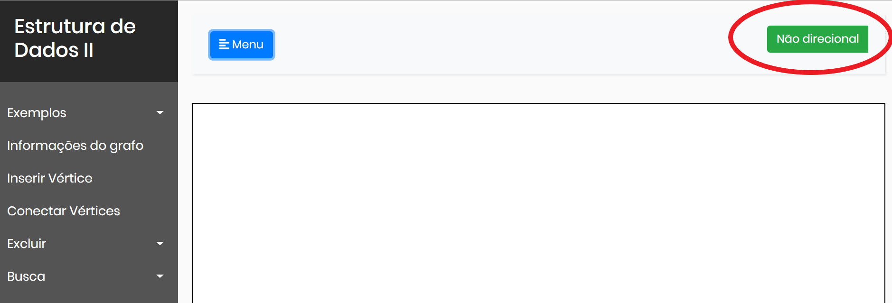
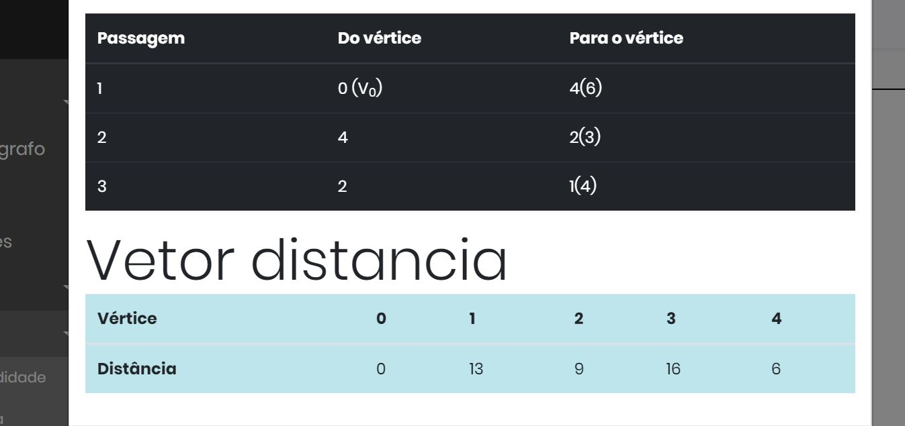
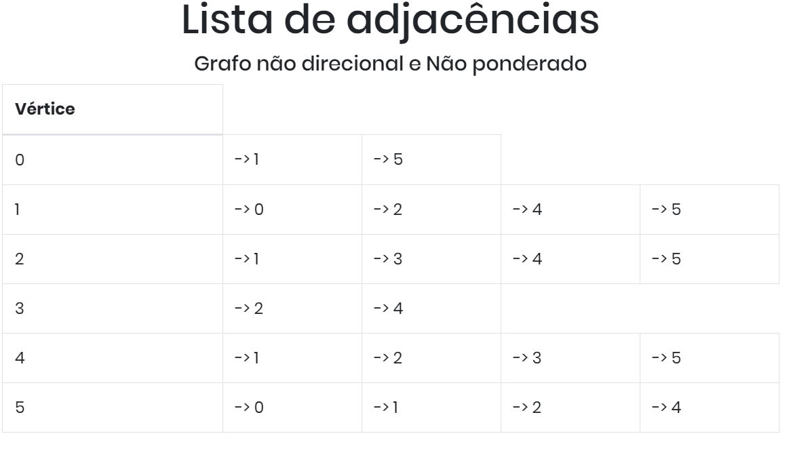
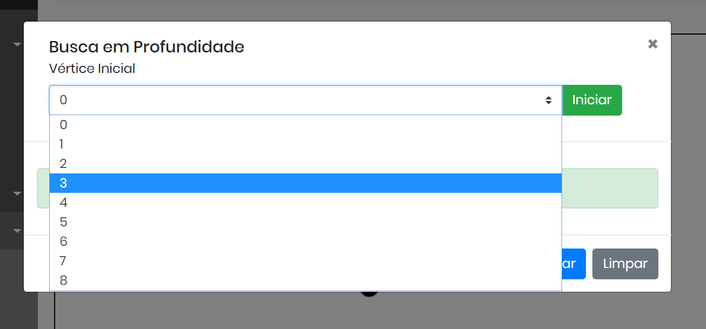
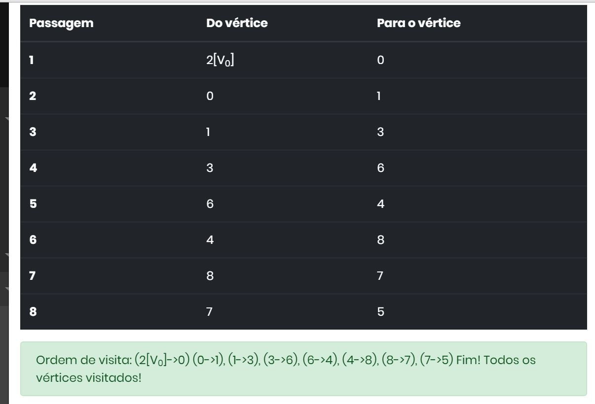
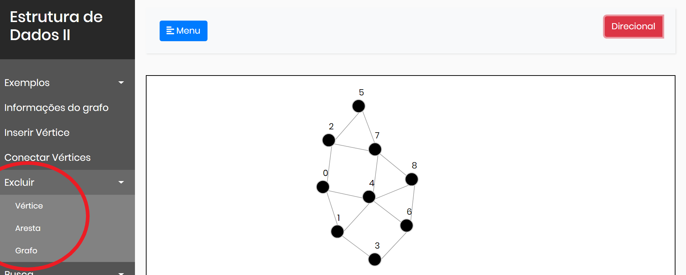

Teoria dos Grafos
A teoria dos grafos é um ramo da matemática que estuda as relações entre os objetos de um determinado conjunto. Para tal são empregadas estruturas chamadas de grafos, G(V,E) , onde V é um conjunto não vazio de objetos denominados vértices (ou nós) e E (do inglês Edges - arestas) é um subconjunto de pares não ordenados de V.

Dependendo da aplicação, arestas podem ou não ter direção, pode ser permitido ou não arestas ligarem um vértice a ele próprgrafo trivial.io e vértices e/ou arestas podem ter um peso (numérico) associado. Se as arestas têm uma direção associada (indicada por uma seta na representação gráfica) temos um dígrafo (grafo orientado). Um grafo com um único vértice e sem arestas é conhecido como grafo trivial.
Estruturas que podem ser representadas por grafos estão em toda parte e muitos problemas de interesse prático podem ser formulados como questões sobre certos grafos. Por exemplo, a estrutura de ligações da Wikipédia pode ser representada por um dígrafo: os vértices são os artigos da Wikipédia e existe uma aresta do artigo A para o artigo B se e somente se A contém um link para B. Dígrafos são também usados para representar máquinas de estado finito.
Fonte: Wikipédia
Operações com grafos
As operações básicas com grafos são:
- Inserir Vértice
- Inserir Aresta
- Remover Aresta
- Remover vértice
- Verificar se existe aresta entre os vértices x e y
- Encontrar todos os vértices adjacentes
Algoritmos de busca
Os algoritmos de busca de grafos tem como caracteristica a visita sistematicamente de todos os vértices do grafo. Alguns tipos deles são:
- Busca em Profundidade
- Busca em Largura
- Ordenação Topologica
Busca em Profundidade
Formalmente, um algoritmo de busca em profundidade realiza uma busca não-informada que progride através da expansão do primeiro vértice do grafo , e se aprofunda cada vez mais, até que o alvo da busca seja encontrado ou até que ele se depare com um vértice que não possui arestas. Então a busca retrocede (backtrack) e começa no próximo vértice.

Fonte: Wikipédia
Busca em Largura
Formalmente, uma busca em largura é um método de busca não-informada (ou desinformada) que expande e examina sistematicamente todos os vértices de um grafo direcionado ou não-direcionado. Em outras palavras, podemos dizer que o algoritmo realiza uma busca exaustiva num grafo passando por todas as arestas e vértices do grafo. Sendo assim, o algoritmo deve garantir que nenhum vértice ou aresta será visitado mais de uma vez e, para isso, utiliza uma estrutura de dados fila para garantir a ordem de chegada dos vértices. Dessa maneira, as visitas aos vértices são realizadas através da ordem de chegada na estrutura fila e um vértice que já foi marcado não pode entrar novamente a esta estrutura.
Uma analogia muito conhecida (figura a baixo) para demonstrar o funcionamento do algoritmo é pintando os vértices de branco, cinza e preto. Os vértices na cor branca ainda não foram marcados e nem enfileirados, os da cor cinza são os vértices que estão na estrutura fila e os pretos são aqueles que já tiveram todos os seus vértices vizinhos enfileirados e marcados pelo algoritmo.

Fonte: Wikipédia
Ordenação Topologica
ordenação topológica de um digrafo acíclico (DAG) é uma ordem linear de seus nós em que cada nó vem antes de todos nós para os quais este tenha arestas de saída. Cada DAG tem uma ou mais ordenações topológicas.
A aplicação canônica da ordenação topológica (ordem topológica) está na programação de uma sequência de trabalhos ou tarefas; tem uso potencial todas as vezes em que o problema abordado envolve uma ordem parcial. Algoritmos de ordenação topológica começaram a ser estudados no início dos anos 1960 no contexto da técnica PERT para a agendamento de tarefas em gerenciamento de projetos. Os trabalhos são representados por vértices, e existe uma aresta de x para y se o trabalho x deve estar concluído antes do trabalho y poder ser iniciado (por exemplo, ao lavar roupas, a máquina de lavar deve terminar antes de se poder colocar as roupas para secar). Uma ordenação topológica dá uma ordem na qual se possa realizar os trabalhos.

O grafo mostrado à esquerda tem muitas ordenações, incluindo:
- 7, 5, 3, 11, 8, 2, 9, 10 (visual esquerda-para-direita, de-cima-para-baixo)
- 3, 5, 7, 8, 11, 2, 9, 10 (vértice de menor número disponível primeiro)
- 3, 7, 8, 5, 11, 10, 2, 9
- 5, 7, 3, 8, 11, 10, 9, 2 (menor número de arestas primeiro)
- 7, 5, 11, 3, 10, 8, 9, 2 (vértice de maior número disponível primeiro)
- 7, 5, 11, 2, 3, 8, 9, 10
Fonte: Wikipédia
Um algoritmo extra:
Algoritmo de Dijkstra
O algoritmo de Dijkstra, concebido pelo cientista da computação holandês Edsger Dijkstra em 1956 e publicado em 1959,[1][2] soluciona o problema do caminho mais curto num grafo dirigido ou não dirigido com arestas de peso não negativo, em tempo computacional O([m+n]log n) onde m é o número de arestas e n é o número de vértices. O algoritmo que serve para resolver o mesmo problema em um grafo com pesos negativos é o algoritmo de Bellman-Ford, que possui maior tempo de execução que o Dijkstra.
O algoritmo considera um conjunto S de menores caminhos, iniciado com um vértice inicial I. A cada passo do algoritmo busca-se nas adjacências dos vértices pertencentes a S aquele vértice com menor distância relativa a I e adiciona-o a S e, então, repetindo os passos até que todos os vértices alcançáveis por I estejam em S. Arestas que ligam vértices já pertencentes a S são desconsideradas.
Um exemplo prático do problema que pode ser resolvido pelo algoritmo de Dijkstra é: alguém precisa se deslocar de uma cidade para outra. Para isso, ela dispõe de várias estradas, que passam por diversas cidades. Qual delas oferece uma trajetória de menor caminho?

Fonte: Wikipédia
Este é um trabalho feito para a máteria de Estrutura de Dados II ministrada pela professora Marcia A. Zanoli Meira e Silva, do curso de Bacharelado em Ciência da computação da Universidade Estadual Paulista "Júlio de Mesquita Filho" (UNESP) da cidade de Bauru.
O trabalho foi desenvolvido utilizando Bootstrap, Javascript e algumas bibliotecas de Javascript. As bibliotecas utilizadas foram:- Jquery
- VivaGraphJs (Gerar e manipular os grafos)
- Queue.Js (criar e manipular filas)
- List.js (criar e manipular listas encadeadas)
O que o trabalho pode fazer?
O trabalho pode realizar as funções básicas de um grafo (inserir vértices, inserir aresta,...) como também pode realizar os 4 algoritmos de busca aqui nesta página mostrados brevemente.
O trabalho pode trabalhar com dígrafos ou grafos normais, a imagem a baixo mostra um botão aonde o usuário pode alterar essa função do grafo.
Todos as arestas tem o registo da origem e destino da aresta, porém quando o grafo está com a opção Não direcional então a origem e destino são ignorados, agindo como se fosse uma conexão normal do grafo.
Grafos ponderados
Os grafos não tem valor de aresta únicos, isso pode ser modificado quando um novo grafo for construido os pesos de cada aresta podem ser selecionados e com isso ter resultados diferentes nos algoritmos.
 Outras funções do trabalho

Exemplos
O trabalho permite que você possa criar o seu próprio grafo, porém já existem alguns Exemplos
pré programados, esses exemplos foram apresentados durante as aulas de Estrutura de Dados II da
UNESP de Bauru;

Lista de adjacências
Algumas informações do grafo podem ser verficadas
através de uma lista de adjacências, aonde a lista mostra todos os vértices
do grafo e quais os vértices ao qual ele está conectado.
Caso o grafo seja direcional, a lista mostrará somente as conexões origem->destino!

Escolha do vértice inicial
Você tem a opção de escolher qual será o vértice
inicial do tipo de busca.

Resultados!
O algoritmo escolhido, no final de seu processamento
lhe mostrará uma tabela com todas as passagens que foram feitas, para
verificar todos os vértices do grafo!
Exclusão
Exemplos
O trabalho permite que você possa criar o seu próprio grafo, porém já existem alguns Exemplos pré programados, esses exemplos foram apresentados durante as aulas de Estrutura de Dados II da UNESP de Bauru;
Lista de adjacências
Algumas informações do grafo podem ser verficadas através de uma lista de adjacências, aonde a lista mostra todos os vértices do grafo e quais os vértices ao qual ele está conectado. Caso o grafo seja direcional, a lista mostrará somente as conexões origem->destino!
Escolha do vértice inicial
Você tem a opção de escolher qual será o vértice inicial do tipo de busca.
Resultados!
O algoritmo escolhido, no final de seu processamento lhe mostrará uma tabela com todas as passagens que foram feitas, para verificar todos os vértices do grafo!
O trabalho pode remover, vértices, arestas e até mesmo deletar todo o grafo criado.
E atualizações futuras
Atualmente o trabalho consegue manipular e buscar nos grafos tanto direcional, como não direcional, ponderado como não ponderado. Porém, essas informações de origem e destino, e o peso da aresta não estão aparecendo graficamente no grafo quando ele é gerado. Veja o exemplo:
Ainda não foi possível a implementação das setas que mostram a direção e do valor da aresta.
Porém essas são as proximas atualizações desse projeto!
Apesar de não ter as setas mostrando a direção e os pesos das arestas, a lista de adjacências podem trazer essa informação caso seja necessário, como mostrado abaixo.
Outro detalhe é que não é possível mudar os nomes dos vértices, e nem acrescentar mais dados que queira. Por enquanto não é possível, por exemplo, colocar nomes de cidades em cada vértice ao invés de numeros, para poder simular um problema real. Isso mudará futuramente!!!